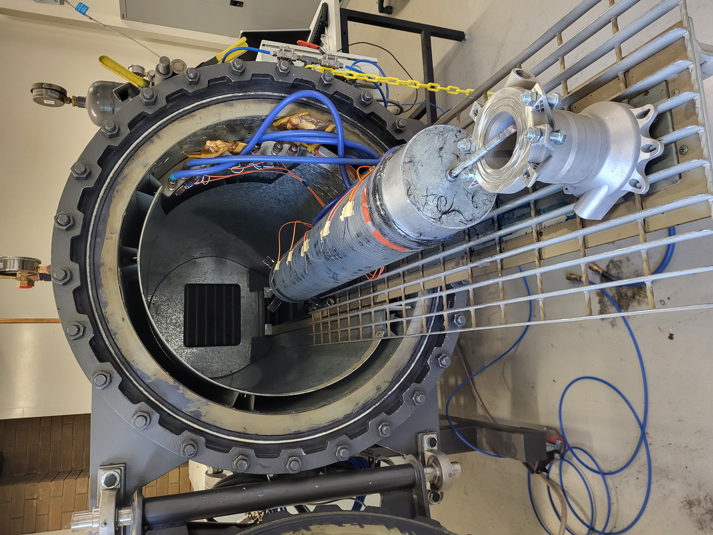

Back to Projects
Solaris Mk III Composite Pressure Vessel
Overview
- A Type V Composite Overwrapped Pressure Vessel. Carbon-fibre composite structure, utilising threaded aluminium endcaps
- Designed to reduce mass by 58% compared to a traditional aluminium pressure vessel
- Uses Technirez R2600/H2409 epoxy resin system with sufficiently high glass transition temperature to withstand heat exposure
- Forms the structure of Solaris Mk III's combustion chamber, with threaded closures retaining the nozzle and forward closure
- Entirely fabricated in-house. From composite layup, to machining of bulkheads and autoclave cure of the vessel



My Role
- Used ANSYS ACP and FEA tools to simulate the behavior of the composite structure under expected loading conditions
- Conducted testing in accordance with ASTM D5868 to validate bond strength
- Selected appropriate resin system to withstand expected operating temperatures
- Advanced composite manufacturing techniques including layups and autoclave operation
- Hydrostatic tested subscale COPV test articles
Results & Impact
- Solaris Mk III was test fired for the first time in July 2025 at the Race2Space competition
- 1.4 seconds into the test, the nozzle detached from the combustion chamber. Subsequent analysis revealed a manufacturing defect in the threaded closure
- Failure analysis was documented, and the findings from the Solaris Mk III project were published at the 2025 Australian Space Research Conference
- The paper was awarded the 2nd place prize for Best Undergraduate Research Paper